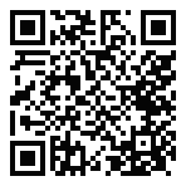
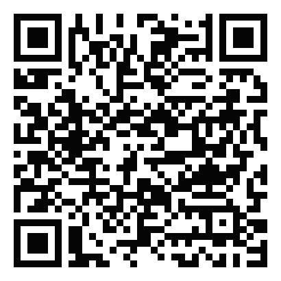
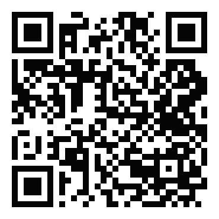
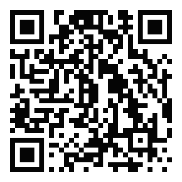

Universidade do Estado de Santa Catarina · CCT
Astronomia
AST0001 · Curso de Física · apresentação da disciplina
Prof. Dr. Rafael Camargo Rodrigues de Lima · 2026/2
O que este curso pergunta
Como sabemos o que sabemos sobre o universo?
- Não dá para pôr uma estrela numa bancada
- Não dá para repetir a formação de uma galáxia
- O que chega até nós é luz, posição, tempo de chegada — e pouco mais
- Todo o resto é inferência, e inferência tem hipóteses
A cadeia que atravessa o semestre
observável → calibração → modelo → grandeza física
- Fluxo, ângulo e tempo são medidos
- Massa, distância, temperatura, idade e composição são deduzidos
- A pergunta que se repete em toda aula: o que foi medido e o que foi suposto?
Ao final do semestre, você deve conseguir
- Transformar uma medida bruta em uma grandeza física, e dizer que hipóteses usou
- Deduzir as relações centrais, não apenas aplicá-las
- Trabalhar com dados reais de arquivos públicos
- Estimar ordens de grandeza antes de calcular
- Escrever o resultado como um artigo curto, com incerteza e discussão
O semestre em seis blocos
| Aulas | Bloco |
|---|
| 1–6 | Ferramentas observacionais: céu, órbitas, luz e telescópios |
| 7–21 | Estrelas: parâmetros, interiores, o Sol, formação e evolução |
| 22–25 | Objetos compactos, relatividade e ondas gravitacionais |
| 26–34 | Sistema Solar e exoplanetas |
| 35–42 | Via Láctea, galáxias e estrutura cósmica |
| 43–48 | Núcleos ativos, cosmologia e universo primordial |
48 aulas. Cada bloco tem um capítulo de apoio correspondente na apostila.
O material do curso
Sitetudo em um endereço só, sem senha
Apostila211 páginas, 19 capítulos, com deduções
Laboratóriossimuladores interativos no navegador
Dados12 arquivos com medidas reais
Modelo de artigotemplate LaTeX pronto
Slidesas aulas, para revisar depois
O site da disciplina

rafaelcrdelima.github.io/Astronomia
apostilaplano de aulaslaboratóriosdadosmodelo de artigoslides
Nada aqui exige login. Funciona no celular, e os PDFs podem ser baixados para ler sem internet.
O programa da disciplina
- O plano das 48 aulas está no site, em PDF
- Cada aula tem objetivos, ideias-chave, atividade e exercícios
- As duas primeiras já vêm com roteiro de 50 minutos, minuto a minuto
- Serve para você saber o que vem antes de vir
A apostila
19 capítulosde fundamentos observacionais à busca por vida
211 páginasescritas em português, para este curso
Deduções completasKepler, Planck, Chandrasekhar, Friedmann
Apêndiceanálise dimensional, constantes, ordens de grandeza
Baseada na organização do Carroll & Ostlie, mas com texto próprio — e com o material moderno que o livro não tem: LIGO, JWST, Gaia, Rubin.
Como usar a apostila
- Leia o capítulo antes do bloco de aulas
- Marque os trechos que ligam observação a inferência
- Refaça as contas: é a maneira mais rápida de descobrir se entendeu a hipótese
- Cada capítulo é independente, mas a sequência é cumulativa
Os laboratórios interativos
Laboratório 1paralaxe, fluxo, magnitude e extinção
Laboratório 2órbitas, leis de Kepler e massa central
Laboratório 3espectros, temperatura, cores e velocidade radial
Laboratório 3bfotometria em campo real do SDSS
Rodam no navegador, sem instalar nada. Cada acesso gera um catálogo diferente — os números do seu grupo não serão os do grupo ao lado.
Os dados: medidas de verdade
- Doze arquivos CSV com dados de arquivos públicos
- Nada foi simulado: cada linha é uma medida que alguém fez
- Abrem no Excel, no LibreOffice, no Python ou no Mathematica
- Cada um vem com a equação a aplicar e um valor de referência para conferir
O que há nos arquivos
| Dado | Origem | Serve para |
|---|
| 2000 estrelas próximas | Gaia DR3 | distâncias, diagrama HR |
| 581 binárias eclipsantes | Eker et al. 2018 | massa e luminosidade |
| Espectro solar medido | LASP/LISIRD | Wien e Stefan-Boltzmann |
| 2052 pulsares | ATNF | diagrama P–Ṗ |
| GW150914 | LIGO / GWOSC | ver a onda gravitacional |
| 1573 supernovas Ia | Pantheon+ | medir H0 |
| 176 curvas de rotação | SPARC | matéria escura |
E mais cinco: trânsitos do Kepler, exoplanetas do NASA Archive, planetas do Sistema Solar e zona habitável.
Onde baixar os dados

rafaelcrdelima.github.io/Astronomia/
apostila-astrofisica-moderna/dados/
CSVsem cadastromenos de 1 MB cada
A página lista, para cada arquivo, o que ele contém, de onde veio e em que capítulo ele é usado.
O artigo
- A entrega do curso não é um relatório de laboratório: é um artigo curto
- Formato de revista científica: duas colunas, resumo, seções e bibliografia
- O template já vem pronto — você preenche cinco linhas e escreve
- O que se avalia é a cadeia: dado, método, resultado com incerteza, discussão
A estrutura do artigo
Resumoum parágrafo, com o resultado numérico dentro
Introduçãoo que se pergunta e por que importa
Revisão Teóricasó as equações que você vai usar
Dados e Discussãoorigem, tabelas, figuras, resultado, comparação
Conclusãoo que o número significa e o que o limita
Bibliografiasó o que foi realmente consultado
O modelo de artigo

rafaelcrdelima.github.io/Astronomia/modelo-artigo/
LaTeXOverleaf.zip com tudo
Baixe o zip, envie os três arquivos ao Overleaf e compile. O PDF de exemplo mostra como deve ficar.
Três regras para o artigo
- Todo resultado tem valor, incerteza e unidade — sem os três, não é resultado
- Toda figura e toda tabela são citadas no texto — o que ninguém menciona não deveria estar lá
- Toda hipótese é declarada — inclusive as que você não gostaria de ter feito
O que vale mais que um número bonito
- Qual foi o observável direto, e o que veio de modelo
- Qual é a maior fonte de incerteza — e se é estatística ou sistemática
- O que aconteceria se a hipótese principal estivesse errada
- Um resultado com incerteza honesta vale mais que um resultado preciso e ingênuo
As ferramentas
Excel ou LibreOfficesuficiente para a maioria dos laboratórios
Pythonpandas e matplotlib, se você já usa
Mathematicadisponível na universidade
OverleafLaTeX no navegador, sem instalar nada
Os roteiros trazem a fórmula pronta para Excel e para Python. Escolha a ferramenta com que você trabalha mais rápido.
Os slides

rafaelcrdelima.github.io/Astronomia/slides/
para revisarfunciona no celular
As aulas ficam publicadas. Servem para revisar, não para substituir a aula — o que se discute em sala não está escrito nos slides.
Bibliografia
- Carroll & Ostlie, An Introduction to Modern Astrophysics, 2ª ed. — a referência do curso
- Ryden & Peterson, Foundations of Astrophysics
- Karttunen et al., Fundamental Astronomy
- Arquivos públicos: Gaia, MAST, GWOSC, NASA Exoplanet Archive, ESO
- Para acompanhar o que é recente: arXiv, seções astro-ph
Como começamos
- Aula 1: o céu como laboratório físico — ângulos, coordenadas, e por que existem estações
- Aula 2: paralaxe, magnitudes e a ponte entre brilho e física
- Leitura: Capítulo 1 da apostila, as duas partes
- Primeiro laboratório de dados: 2000 estrelas do Gaia
O primeiro artigo: a vizinhança solar
- O Laboratório de dados 1 vira o primeiro artigo do semestre
- Os dados: as 2000 estrelas mais próximas do Sol, com paralaxe medida pelo Gaia
- A pergunta: quantas estrelas há por parsec cúbico aqui perto?
- O resultado: uma densidade, com incerteza, comparada a um censo de referência
Não é um relatório de laboratório. É um artigo curto, no modelo da disciplina, com resumo, seções e bibliografia.
O arquivo
01_gaia_estrelas_25pc.csv
2000 estrelas10 colunasGaia DR3
Está na página de dados, junto com os outros onze. Traz paralaxe e seu erro, movimento próprio, velocidade radial, magnitude G e cor BP−RP — já na convenção μα* = μα cos δ.
O caminho, passo a passo
1. Distânciad = 1000 / p, com p em mas
2. Magnitude absolutaM = G − 5 log d + 5
3. Diagrama HRMG contra BP−RP; conte os dois grupos com um critério escrito
4. CompletezaN(<d)/d³ contra d: até onde a curva é plana
5. Densidaden = N / (4/3 π R³), com incerteza de Poisson
6. Velocidadesvt = 4,74 μ d; a espacial só onde há velocidade radial
A incerteza da distância sai de graça: σd/d = σp/p.
Três armadilhas desta amostra
- O raio real é 18,4 pc, não 25 — a lista foi cortada nas 2000 mais próximas, e usar 25 erra a densidade por um fator 2,5
- Faltam as estrelas brilhantes: o Gaia satura em G ≈ 2,7 — não há Sirius, Vega nem Arcturus
- 28% não têm velocidade radial — são 561 células vazias, e o Excel lê vazio como zero
As três precisam aparecer na discussão. São elas que explicam a diferença entre o seu número e o de referência.
O resultado principal
n = N / (4/3 π R³) com σn/n = 1/√N
- Um número, com incerteza, comparado ao censo da vizinhança solar — cerca de 0,10 estrela por pc³
- A diferença não é erro: é exatamente o que a discussão tem de explicar
- Nomeie cada efeito e, quando der, estime o tamanho dele
A apostila traz um bloco “Confira” com os valores esperados. Use depois de ter feito a sua conta, não antes.
O que vai em cada seção
Resumoa densidade medida, a incerteza e a comparação, em números
Introduçãoo que é uma amostra limitada por volume, e por que aqui se conta quase estrela a estrela
Revisão Teóricasó d = 1/p, o módulo de distância, n = N/V e Poisson
Dados e Discussãoorigem, o HR com o critério, a completeza, a densidade e a diferença explicada
Conclusãoo que o número significa e o que dominaria uma medida melhor
BibliografiaGaia DR3 e a fonte do valor de referência
Como entregar
rafaelcrdelima.github.io/Astronomia/
modelo-artigo/
zip do modeloOverleafartigo de exemplo
Há um artigo de exemplo resolvido: este mesmo laboratório, escrito no modelo, com o script de análise ao lado. Use para ver o formato e o nível esperado — não para copiar o texto. No Overleaf, compile duas vezes.
Uma última coisa
Ninguém aqui vai decorar o céu.
- O objetivo é aprender a transformar medida em conhecimento
- E a dizer, com honestidade, o quanto se sabe e o quanto não se sabe
- Isso serve para astrofísica — e para qualquer coisa que você meça depois